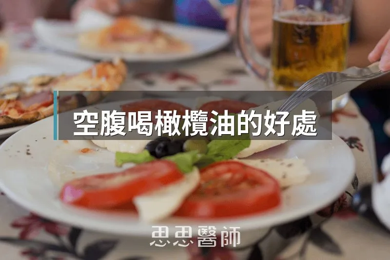
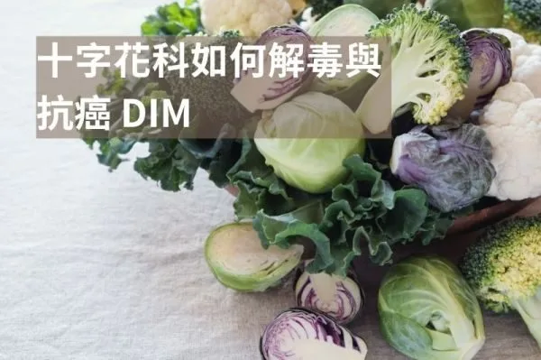

空腹喝橄欖油的好處

2005 年，一位研究員在西西里島品嚐新鮮榨製的橄欖油。油喝下去，他的喉嚨後方出現了一種熟悉的刺痛感。他認出來了，那和他讓受試者喝下液態布洛芬（ibuprofen）時的感覺一模一樣。他把那瓶油帶回了費城的實驗室，找出造成那個刺感的物質，命名為 oleocanthal（油橄欖素），並且發表在《自然》期刊上。
那個偶然的發現打開了一條研究方向：橄欖油裡的某種物質，和市面上最常見的消炎藥走的是同一條路徑。
Oleocanthal：天然的 COX 抑制劑
布洛芬的消炎機轉，是抑制 COX-1 和 COX-2 這兩個酵素，阻斷發炎物質的合成路徑。Oleocanthal 做的事完全一樣。根據一份系統性文獻回顧，在等莫耳濃度下，oleocanthal 對 COX 酵素的抑制效果甚至比布洛芬更強：oleocanthal 抑制 41 至 57% 的 COX 活性，布洛芬在相同濃度只抑制 13 至 18%。
不同之處是：它不傷胃、不影響肝臟，而且它出現在食物裡，不是藥片裡。
喉嚨後方那個刺痛感，就是 oleocanthal 的存在。沒有刺感的橄欖油，這個成分通常已經流失了。
慢性發炎和胰島素阻抗是同一件事的兩面
腹部脂肪之所以難以減少，很多時候不是攝取了多少卡路里的問題，而是細胞環境出了問題。
當脂肪細胞長期處在低度發炎的狀態，它們對胰島素的反應會變差。胰島素接收不到迴響，身體就繼續分泌更多。胰島素長期偏高的結果，是身體持續鎖住脂肪，拒絕釋放。這個循環一旦形成，就算減少熱量攝取，也難以打破，因為根本的信號環境沒有改變。
Oleocanthal 做的事，就是降低那個發炎信號。當發炎下降，細胞重新對胰島素產生反應，脂肪的「鎖」才有可能鬆開。涵蓋多項臨床試驗的系統性回顧顯示，食用高多酚初榨橄欖油的受試者，發炎指標 CRP 下降了 22%，胰島素敏感性與血糖控制也顯著優於食用一般橄欖油的對照組。
OEA：油酸轉化出的飽足信號
橄欖油的另一條作用路徑，是通過油酸（oleic acid）。
油酸進入小腸之後，腸道黏膜細胞會把它轉化為油醯乙醇胺（oleoylethanolamide，OEA）。OEA 的任務很直接：沿著迷走神經往上傳送信號，告訴大腦「已經夠了，可以停了。」這個機轉在動物研究中已確認：當飲食中的油酸含量下降，小腸的 OEA 合成也隨之降低，動物的進食量顯著增加；一旦補回油酸，進食量恢復正常。
這條路徑也在人體上得到了驗證。一項以 15 位受試者為對象的交叉設計研究，讓受試者在三個不同場合，各攝取含有 30 毫升不同油品的餐食，三種油分別是：一般葵花油（低油酸含量）、高油酸葵花油，以及初榨橄欖油。結果顯示，攝取高油酸葵花油和初榨橄欖油的受試者，飯後血液中 OEA 濃度均顯著高於攝取一般葵花油的受試者，並且在後續 24 小時內，整體進食量也跟著下降。綜合多項人體隨機對照試驗的統合分析同樣確認，OEA 能顯著降低受試者的食慾與體重。
這說明了一件事：不是靠意志力少吃，是飽足信號真的傳到大腦了。
值得注意的是，提升 OEA 的關鍵在於油酸含量，而非橄欖油獨有的成分。高油酸葵花油同樣提升了 OEA。初榨橄欖油在這裡的優勢，是在提供油酸的同時，還帶著 oleocanthal 等多酚，讓消炎和飽足兩條路徑同時運作。
為什麼要在空腹的時候喝
空腹的意義在於時機窗口。
早晨起床後，胰島素處於一天當中的最低點，血糖平穩，沒有食物的干擾。在這個狀態下攝取橄欖油，多酚能相對清楚地進入循環，開始低調地降低發炎信號。
但這個窗口很容易被關上。如果喝油之後馬上跟著喝加糖的咖啡，或吃了白吐司、含糖優格，血糖和胰島素隨即上升，身體切換回儲脂模式，橄欖油剛傳出去的信號就被蓋過去了。
做法和選油
做法：一湯匙初榨橄欖油，空腹單獨服用，之後給它一段時間再進食，不要馬上跟著吃含糖或精製碳水的食物。
選油的關鍵：喝下去之後，喉嚨後方要有刺感。那個刺感就是 oleocanthal。如果油喝下去完全順滑、沒有任何刺激，代表 oleocanthal 已經不在了，可能是油品陳放太久、受到光線或氧化影響，或者本來就是品質較差的油。
橄欖油能做到的事，需要對的油才有可能發生。而判斷的方式，就是那一陣喉嚨刺感。
參考資料
（本文由我規劃架構與觀點，並協同 AI 校正與潤飾語句）
 空腹小雞跟思思醫師一起斷食，順便養一隻小雞來養小雞 →
空腹小雞跟思思醫師一起斷食，順便養一隻小雞來養小雞 →
好朋友早餐信
一週一封：《健康駭客週報》這集的研究重點，加上家醫專欄這週的新文章。免費，隨時可以退訂。
延伸閱讀

原型食物中的超級維生素，鱈魚肝
鱈魚肝罐頭的 omega-3 與維生素 D 含量遠高於沙丁魚，維生素 A 也極高但有攝取上限，作者建議每週兩到三次、每次一到兩湯匙。

你喝的咖啡，最有價值的可能不是咖啡因
咖啡中最有價值的成分可能是綠原酸而非咖啡因，文中說它與血糖控制相關且怕熱，淺焙保留的含量遠高於深焙。

十字花科如何解毒與抗癌，DIM
十字花科蔬菜的DIM能平衡雌激素代謝、抑制腫瘤形成，每週吃三四次十字花科蔬菜並搭配生食來源以保留芥子酶活性最為理想。